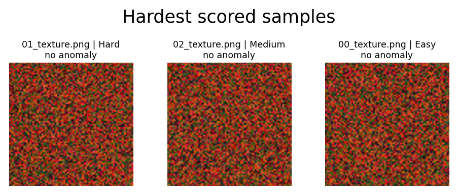
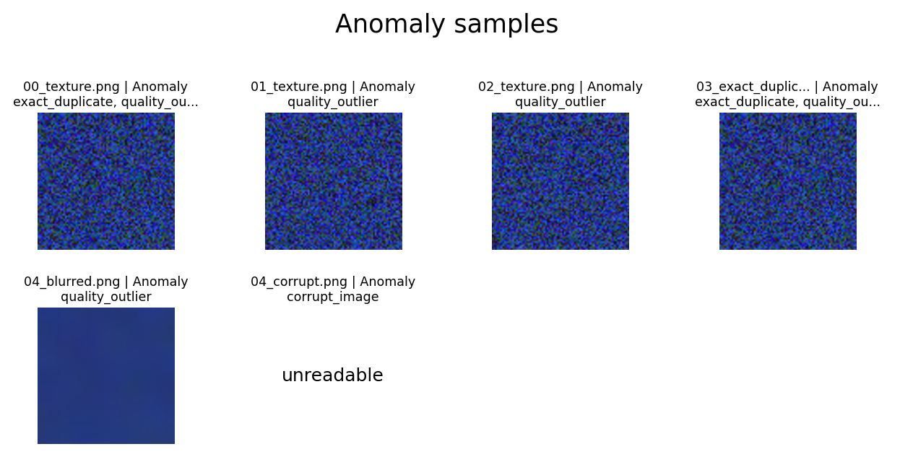

Dataset Difficulty Prior Report
Training-free relative difficulty prior. Scores are not accuracy predictions. Anomalies are listed separately from Easy, Medium, and Hard bands.
Dataset Counts
total9
anomalies6
scored3
unscored0
semantic_available0
Difficulty Bands
{"Anomaly": 6, "Easy": 1, "Hard": 1, "Medium": 1}
Split Counts
{"excluded_anomaly": 6, "train": 2, "test": 1}
Hardest Scored Samples
| sample_id | rel_path | label | difficulty_band | difficulty_score | component_coverage | semantic_complexity | anomaly_types | split |
|---|---|---|---|---|---|---|---|---|
| 9e318e7d62033dbd72fb | dog/01_texture.png | dog | Hard | 0.3000 | 0.4000 | n/a | train | |
| 75424e6077af5c87f52e | dog/02_texture.png | dog | Medium | 0.2583 | 0.4000 | n/a | test | |
| 828d94330773e5e7c801 | dog/00_texture.png | dog | Easy | 0.2167 | 0.4000 | n/a | train |
Hard Sample Preview

Anomaly Samples
| sample_id | rel_path | label | difficulty_band | difficulty_score | component_coverage | semantic_complexity | anomaly_types | split |
|---|---|---|---|---|---|---|---|---|
| 925c3b14398636908fdf | cat/00_texture.png | cat | Anomaly | n/a | 0.0000 | n/a | exact_duplicate;quality_outlier | excluded_anomaly |
| 395234e3fb969cd3f76c | cat/01_texture.png | cat | Anomaly | n/a | 0.0000 | n/a | quality_outlier | excluded_anomaly |
| ca4368843090603f76b9 | cat/02_texture.png | cat | Anomaly | n/a | 0.0000 | n/a | quality_outlier | excluded_anomaly |
| d7b742f4a7ce53235f59 | cat/03_exact_duplicate.png | cat | Anomaly | n/a | 0.0000 | n/a | exact_duplicate;quality_outlier | excluded_anomaly |
| 7740cb2466eeb82779b2 | cat/04_blurred.png | cat | Anomaly | n/a | 0.0000 | n/a | quality_outlier | excluded_anomaly |
| 25632d8d7789acdd3abc | dog/04_corrupt.png | dog | Anomaly | n/a | 0.0000 | n/a | corrupt_image | excluded_anomaly |

Warnings
- Semantic metrics are disabled; semantic fields remain null.
- Strata label='dog', band='Easy', size=1 cannot fully satisfy validation/test quotas.
- Strata label='dog', band='Hard', size=1 cannot fully satisfy validation/test quotas.
- Strata label='dog', band='Medium', size=1 cannot fully satisfy validation/test quotas.